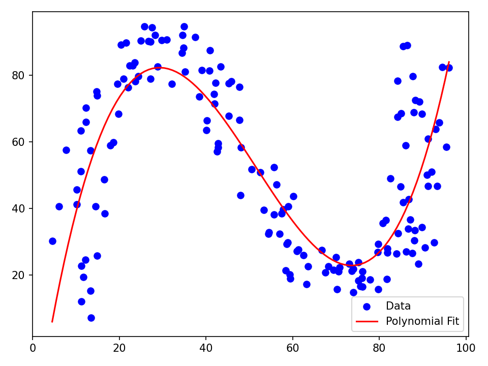

Code Snippets
The following code snippets demonstrate how to use the basic objects and methods of SigAlg. This page is not yet comprehensive, so the user will need to inspect the API reference for additional code examples. More code snippets will be added to this page as they are written.
It is also worth checking out the extended introduction to SigAlg.
Sample spaces
Creating sample spaces
API References: SampleSpace
"""Instantiate a SampleSpace from different data sources."""
import pandas as pd
from sigalg.core import SampleSpace
Omega_from_list = SampleSpace( # (1)!
name="Omega_from_list",
).from_list(["H", "T"])
Omega_from_sequence = SampleSpace( # (2)!
name="Omega_from_sequence",
).from_sequence(size=6, initial_index=1)
Omega_with_prefixes = SampleSpace( # (3)!
name="Omega_with_prefixes",
).from_sequence(size=4, prefix="omega")
data = pd.Index(["red", "green", "blue"])
Omega_from_pandas = SampleSpace( # (4)!
name="Omega_from_pandas",
).from_pandas(data)
print(Omega_from_list)
print("\n", Omega_from_sequence)
print("\n", Omega_with_prefixes)
print("\n", Omega_from_pandas)
- Create a sample space \(\Omega = \{H, T\}\) from a Python list.
- Create a sample space \(\Omega = \{1, 2, 3, 4, 5, 6\}\) using the
from_sequencemethod. - Create a sample space \(\Omega = \{\omega_0, \omega_1, \omega_2, \omega_3\}\) using the
from_sequencemethod with a prefix. - Create a sample space \(\Omega = \{\text{red}, \text{green}, \text{blue}\}\) from a
pd.Indexwith thefrom_pandasmethod.
Sample space 'Omega_from_list':
['H', 'T']
Sample space 'Omega_from_sequence':
[1, 2, 3, 4, 5, 6]
Sample space 'Omega_with_prefixes':
['omega_0', 'omega_1', 'omega_2', 'omega_3']
Sample space 'Omega_from_pandas':
['red', 'green', 'blue']
Extracting events
API References: SampleSpace
"""Extracting events from a sample space."""
from sigalg.core import SampleSpace
Omega = SampleSpace().from_sequence(size=5, initial_index=1, prefix="omega") # (1)!
A = Omega.get_event(["omega_1", "omega_2", "omega_3"], name="A") # (2)!
B = Omega[2:5, "B"] # (3)!
C = Omega[[0, 3], "C"] # (4)!
print(Omega)
print("\n", A)
print("\n", B)
print("\n", C)
- Create a sample space \(\Omega = \{\omega_1, \omega_2, \omega_3, \omega_4, \omega_5\}\).
- Extract the event \(A=\{\omega_1, \omega_2, \omega_3\}\) using the
get_eventmethod. - Extract the event \(B=\{\omega_3, \omega_4, \omega_5\}\) by (positional-based) slicing.
- Extract the event \(C=\{\omega_1, \omega_4\}\) by (positional-based) indexing.
Sample space 'Omega':
['omega_1', 'omega_2', 'omega_3', 'omega_4', 'omega_5']
Event 'A':
['omega_1', 'omega_2', 'omega_3']
Event 'B':
['omega_3', 'omega_4', 'omega_5']
Event 'C':
['omega_1', 'omega_4']
Creating probability spaces
API References: ProbabilityMeasure, SampleSpace, SigmaAlgebra
"""Create a ProbabilitySpace from an instance of SampleSpace, SigmaAlgebra, and ProbabilityMeasure."""
from sigalg.core import ProbabilityMeasure, SampleSpace, SigmaAlgebra
Omega = SampleSpace().from_sequence(size=4) # (1)!
atom_ids = {
0: 0,
1: 1,
2: 0,
3: 1,
}
F = SigmaAlgebra(sample_space=Omega).from_dict(atom_ids) # (2)!
probabilities = {
0: 0.1,
1: 0.2,
2: 0.4,
3: 0.3,
}
P = ProbabilityMeasure(sample_space=Omega).from_dict(probabilities) # (3)!
prob_space = Omega.make_probability_space( # (4)!
sigma_algebra=F,
probability_measure=P,
)
print(prob_space)
- Create a sample space \(\Omega = \{0,1,2,3\}\).
- Create a \(\sigma\)-algebra \(\mathcal{F}\) on \(\Omega\) with atoms \(A_0 = \{0,2\}\) and \(A_1 = \{1,3\}\).
- Create a probability measure \(P\) on \(\Omega\) with \(P(\{\omega\}) = \begin{cases} 0.1 & \text{if } \omega = 0 \\ 0.2 & \text{if } \omega = 1 \\ 0.4 & \text{if } \omega = 2 \\ 0.3 & \text{if } \omega = 3 \end{cases}\)
- Create a probability space \((\Omega, \mathcal{F}, P)\).
Probability space (Omega, F, P)
===============================
* Sample space 'Omega':
[0, 1, 2, 3]
* Sigma algebra 'F':
atom ID
sample
0 0
1 1
2 0
3 1
* Probability measure 'P':
probability
sample
0 0.1
1 0.2
2 0.4
3 0.3
Accessing underlying data
API References: SampleSpace
"""Accessing the underlying data in a sample space."""
from sigalg.core import SampleSpace
Omega = SampleSpace().from_sequence(size=5, prefix="s") # (1)!
data = Omega.data # (2)!
print(Omega)
print("\nThe `data` attribute of the sample space:\n", Omega.data)
- Create a sample space \(\Omega = \{s_0,s_1,s_2,s_3,s_4\}\).
- Access the underlying data of the sample space as a
pd.Indexusing thedataattribute.
Sample space 'Omega':
['s_0', 's_1', 's_2', 's_3', 's_4']
The `data` attribute of the sample space:
Index(['s_0', 's_1', 's_2', 's_3', 's_4'], dtype='str', name='sample')
Events
Set operations
API References: Event, SampleSpace
"""Perform set-theoretic operations on events."""
from sigalg.core import SampleSpace
Omega = SampleSpace().from_sequence(size=5) # (1)!
A = Omega.get_event([0, 1, 2], name="A")
B = Omega.get_event([2, 3, 4], name="B")
intersection = A & B
union = A | B
difference = A - B
complement = ~A
print(A)
print("\n", B)
print("\n", intersection)
print("\n", union)
print("\n", difference)
print("\n", complement)
- Create a sample space \(\Omega = \{0,1,2,3,4\}\).
Event 'A':
[0, 1, 2]
Event 'B':
[2, 3, 4]
Event 'A intersect B':
[2]
Event 'A union B':
[0, 1, 2, 3, 4]
Event 'A difference B':
[0, 1]
Event 'A complement':
[3, 4]
Order operations
API References: Event, SampleSpace
"""Perform order-theoretic operations on events."""
from sigalg.core import SampleSpace
Omega = SampleSpace().from_sequence(size=5) # (1)!
A = Omega.get_event([0, 1, 2], name="A")
B = Omega.get_event([0, 1, 2, 3], name="B")
C = Omega.get_event([0, 1, 3], name="C")
print(A)
print("\n", B)
print("\n", C)
print("\nIs A a subset of B?", A <= B)
print("Is A a subset of C?", A <= C)
print("Is B a superset of A?", B >= A)
print("Is C a superset of A?", C >= A)
- Create a sample space \(\Omega = \{0,1,2,3,4\}\).
Event 'A':
[0, 1, 2]
Event 'B':
[0, 1, 2, 3]
Event 'C':
[0, 1, 3]
Is A a subset of B? True
Is A a subset of C? False
Is B a superset of A? True
Is C a superset of A? False
Event spaces
Creating event spaces
API References: EventSpace, SampleSpace, SigmaAlgebra
"""Create an event space from a sample space and a sigma-algebra."""
from sigalg.core import EventSpace, SampleSpace, SigmaAlgebra
Omega = SampleSpace().from_sequence(size=4) # (1)!
atom_ids = {
0: 0,
1: 0,
2: 1,
3: 2,
}
F = SigmaAlgebra(sample_space=Omega).from_dict(atom_ids) # (2)!
event_space = EventSpace(sample_space=Omega, sigma_algebra=F) # (3)!
print(event_space.sample_space)
print("\n", event_space.sigma_algebra) # (4)!
new_atom_ids = {
0: 0,
1: 1,
2: 1,
3: 0,
}
G = SigmaAlgebra(sample_space=Omega, name="G").from_dict(new_atom_ids) # (5)!
event_space.sigma_algebra = G # (6)!
print("\n", event_space.sigma_algebra)
- Create a sample space \(\Omega = \{0,1,2,3\}\).
- Create a \(\sigma\)-algebra \(\mathcal{F}\) on \(\Omega\) with atoms \(A_0 = \{0,1\}\), \(A_1 = \{2\}, A_2 = \{3\}\).
- Create an event space \((\Omega, \mathcal{F})\).
- The sample space \(\Omega\) and \(\sigma\)-algebra \(\mathcal{F}\) are accessible as attributes of the event space.
- Define a new \(\sigma\)-algebra \(\mathcal{G}\).
- The
sigma_algebraattribute of the event space is settable, so we can replace \(\mathcal{F}\) with \(\mathcal{G}\).
Sample space 'Omega':
[0, 1, 2, 3]
Sigma algebra 'F':
atom ID
sample
0 0
1 0
2 1
3 2
Sigma algebra 'G':
atom ID
sample
0 0
1 1
2 1
3 0
Event space inherited methods
API References: EventSpace, SampleSpace, SigmaAlgebra
"""Event spaces inherit methods from SampleSpace and SigmaAlgebra."""
from sigalg.core import EventSpace, SampleSpace, SigmaAlgebra
Omega = SampleSpace().from_sequence(size=4) # (1)!
atom_ids = {
0: 0,
1: 0,
2: 1,
3: 2,
}
F = SigmaAlgebra(sample_space=Omega).from_dict(atom_ids) # (2)!
event_space = EventSpace(sample_space=Omega, sigma_algebra=F) # (3)!
A = event_space.get_event([0, 3]) # (4)!
B = event_space.get_event([0, 1, 2])
print("Is the event A measurable?", event_space.is_measurable(A)) # (5)!
print("\nIs the event B measurable?", event_space.is_measurable(B))
- Create a sample space \(\Omega = \{0,1,2,3\}\).
- Create a \(\sigma\)-algebra \(\mathcal{F}\) on \(\Omega\) with atoms \(A_0 = \{0,1\}\), \(A_1 = \{2\}, A_2 = \{3\}\).
- Create an event space \((\Omega, \mathcal{F})\)
- The
EventSpaceinherits the methodget_eventfromSampleSpace. - The
EventSpaceinherits the methodis_measurablefromSigmaAlgebra. The event \(A\) is not measurable, since it is not a union of atoms, but the event \(B\) is measurable, since it is a union of atoms.
Is the event A measurable? False
Is the event B measurable? True
Probability spaces
Creating probability spaces
API References: ProbabilityMeasure, ProbabilitySpace, SampleSpace, SigmaAlgebra
"""Create a probability space from a sample space, a sigma-algebra, and a probability measure."""
from sigalg.core import ProbabilityMeasure, ProbabilitySpace, SampleSpace, SigmaAlgebra
Omega = SampleSpace().from_sequence(size=4) # (1)!
atom_ids = {
0: 0,
1: 0,
2: 1,
3: 2,
}
F = SigmaAlgebra(sample_space=Omega).from_dict(atom_ids) # (2)!
probabilities = {
0: 0.1,
1: 0.2,
2: 0.4,
3: 0.3,
}
P = ProbabilityMeasure(sample_space=Omega).from_dict(probabilities) # (3)!
prob_space = ProbabilitySpace( # (4)!
sample_space=Omega,
sigma_algebra=F,
probability_measure=P,
)
print(prob_space.sample_space) # (5)!
print("\n", prob_space.sigma_algebra)
print("\n", prob_space.probability_measure)
new_atom_ids = {
0: 0,
1: 1,
2: 1,
3: 2,
}
G = SigmaAlgebra(sample_space=Omega, name="G").from_dict(new_atom_ids) # (6)!
new_probabilities = {
0: 0.1,
1: 0.6,
2: 0.2,
3: 0.1,
}
Q = ProbabilityMeasure(sample_space=Omega, name="Q").from_dict( # (7)!
new_probabilities
)
prob_space.sigma_algebra = G # (8)!
prob_space.probability_measure = Q
print("\n", prob_space.sigma_algebra)
print("\n", prob_space.probability_measure)
- Create a sample space \(\Omega = \{0,1,2,3\}\).
- Create a \(\sigma\)-algebra \(\mathcal{F}\) on \(\Omega\) with atoms \(A_0 = \{0,1\}\), \(A_1 = \{2\}, A_2 = \{3\}\).
- Create a probability measure \(P\) on \(\Omega\) with \(P(\{\omega\}) = \begin{cases} 0.1 & \text{if } \omega = 0 \\ 0.2 & \text{if } \omega = 1 \\ 0.4 & \text{if } \omega = 2 \\ 0.3 & \text{if } \omega = 3 \end{cases}\)
- Create a probability space \((\Omega, \mathcal{F}, P)\).
- The sample space \(\Omega\), \(\sigma\)-algebra \(\mathcal{F}\), and probability measure \(P\) are accessible as attributes of the probability space.
- Define a new \(\sigma\)-algebra \(\mathcal{G}\).
- Define a new probability measure \(Q\) on \(\Omega\).
- The
sigma_algebraandprobability_measureattributes of the probability space are settable, so we can replace \(\mathcal{F}\) with \(\mathcal{G}\) and \(P\) with \(Q\).
Sample space 'Omega':
[0, 1, 2, 3]
Sigma algebra 'F':
atom ID
sample
0 0
1 0
2 1
3 2
Probability measure 'P':
probability
sample
0 0.1
1 0.2
2 0.4
3 0.3
Sigma algebra 'G':
atom ID
sample
0 0
1 1
2 1
3 2
Probability measure 'Q':
probability
sample
0 0.1
1 0.6
2 0.2
3 0.1
Probability space inherited methods
API References: ProbabilitySpace, SampleSpace, SigmaAlgebra, ProbabilityMeasure
"""Probability spaces inherit methods from SampleSpace, SigmaAlgebra, and ProbabilityMeasure."""
from sigalg.core import ProbabilitySpace, SampleSpace
Omega = SampleSpace().from_sequence(size=4) # (1)!
prob_space = ProbabilitySpace(sample_space=Omega) # (2)!
A = prob_space.get_event([0, 2]) # (3)!
print("Is A measurable?", prob_space.is_measurable(A)) # (4)!
print("P(A) =", prob_space.P(A)) # (5)!
- Create a sample space \(\Omega = \{0,1,2,3\}\).
- Create a probability space \((\Omega, \mathcal{F}, P)\), with default \(\sigma\)-algebra \(\mathcal{F}\), the power set of \(\Omega\), and default probability measure \(P\), the uniform distribution on \(\Omega\).
- The
ProbabilitySpaceinherits the methodget_eventfromSampleSpace. - The
ProbabilitySpaceinherits the methodis_measurablefromSigmaAlgebra. - The
ProbabilitySpaceinherits the methodPfromProbabilityMeasure, which computes the probability of an event.
Is A measurable? True
P(A) = 0.5
\(L^2\)-spaces
Creating \(L^2\)-spaces
API References: L2, SampleSpace, SigmaAlgebra, ProbabilityMeasure
"""Create an L2-space from a sample space, sigma-algebra, and probability measure. Check if random variables are in the L2-space."""
from sigalg.core import ProbabilityMeasure, RandomVariable, SampleSpace, SigmaAlgebra
from sigalg.l2 import L2
Omega = SampleSpace().from_sequence(size=4) # (1)!
atom_ids = {
0: 0,
1: 0,
2: 1,
3: 1,
}
F = SigmaAlgebra(sample_space=Omega).from_dict(atom_ids) # (2)!
probabilities = {
0: 0.2,
1: 0.1,
2: 0.4,
3: 0.3,
}
P = ProbabilityMeasure(sample_space=Omega).from_dict(probabilities) # (3)!
H = L2(sample_space=Omega, sigma_algebra=F, probability_measure=P) # (4)!
outputs_X = {
0: 3,
1: 3,
2: 5,
3: 5,
}
outputs_Y = {
0: 1,
1: 3,
2: 4,
3: 2,
}
X = RandomVariable(domain=Omega).from_dict(outputs_X)
Y = RandomVariable(domain=Omega, name="Y").from_dict(outputs_Y) # (5)!
print("Is X in H?", X in H) # (6)!
print("\nIs Y in H?", Y in H) # (7)!
- Create a sample space \(\Omega = \{0,1,2,3\}\).
- Create a \(\sigma\)-algebra \(\mathcal{F}\) on \(\Omega\).
- Create a probability measure \(P\) on \(\Omega\).
- Create the space \(H = L^2(\Omega, \mathcal{F}, P)\).
- Define two random variables \(X,Y: \Omega \to \mathbb{R}\).
- The random variable \(X\) is constant on the atoms of \(\mathcal{F}\), therefore it is \(\mathcal{F}\)-measurable, so it is in \(H\).
- The random variable \(Y\) is not constant on the atoms of \(\mathcal{F}\), therefore it is not \(\mathcal{F}\)-measurable, so it is not in \(H\).
Is X in H? True
Is Y in H? False
Bases of \(L^2\)-spaces
API References: L2, SampleSpace, SigmaAlgebra, ProbabilityMeasure
"""Extract an orthonormal basis for an L2 space."""
from sigalg.core import ProbabilityMeasure, SampleSpace, SigmaAlgebra
from sigalg.l2 import L2
Omega = SampleSpace().from_sequence(size=3) # (1)!
F = SigmaAlgebra(sample_space=Omega).from_dict( # (2)!
{
0: 0,
1: 0,
2: 1,
}
)
P = ProbabilityMeasure(sample_space=Omega).from_dict( # (3)!
{
0: 0.2,
1: 0.5,
2: 0.3,
}
)
H = L2( # (4)!
sample_space=Omega,
sigma_algebra=F,
probability_measure=P,
)
e_0, e_1 = H.basis.values() # (5)!
print("Basis vectors with measure P:")
print("\n", e_0)
print("\n", e_1)
Q = ProbabilityMeasure(sample_space=Omega).from_dict( # (6)!
{
0: 0.7,
1: 0.3,
2: 0.0,
}
)
H.probability_measure = Q # (7)!
print("\nNumber of basis vectors with new measure Q:", len(H.basis)) # (8)!
print("\nNew basis vector:", list(H.basis.values())[0])
- Create a sample space \(\Omega = \{0,1,2\}\).
- Create a \(\sigma\)-algebra \(\mathcal{F}\) on \(\Omega\).
- Create a probability measure \(P\) on \(\Omega\).
- Create the space \(H = L^2(\Omega, \mathcal{F}, P)\).
- The basis consists of normalized indicator functions of the atoms of \(\mathcal{F}\). This is an orthonormal basis of \(H\).
- Define a new probability measure \(Q\) on \(\Omega\) that assigns zero probability to one of the atoms of \(\mathcal{F}\).
- Change the probability measure of the \(L^2\)-space to \(Q\), so that now \(H = L^2(\Omega, \mathcal{F}, Q)\).
- The basis is updated to reflect the change in the probability measure, so the indicator function of the atom with zero probability is removed from the basis. The \(L^2\)-space is only \(1\)-dimensional under \(Q\).
Basis vectors with measure P:
Random variable '0':
0
sample
0 1.195229
1 1.195229
2 0.000000
Random variable '1':
1
sample
0 0.000000
1 0.000000
2 1.825742
Number of basis vectors with new measure Q: 1
New basis vector: Random variable '0':
0
sample
0 1.0
1 1.0
2 0.0
Polynomial regression with \(L^2\)-spaces
API References: L2, SampleSpace, SigmaAlgebra, ProbabilityMeasure
"""Fit a cubic polynomial to data using the L2 orthogonal projection operator."""
import matplotlib.pyplot as plt
import numpy as np
from sigalg.core import Index, RandomVector
from sigalg.l2 import L2
arr = np.load("data/regression_data.npy") # (1)!
component_names = Index().from_list(["X", "Y"])
Z = RandomVector( # (2)!
name="Z",
index=component_names,
).from_numpy(array=arr)
Omega = Z.domain # (3)!
P = Z.probability_measure
X, Y = Z.components # (4)!
H = L2(sample_space=Omega, probability_measure=P) # (5)!
_, u, _ = H.proj( # (6)!
rv=Y,
subspace=[X**0, X, X**2, X**3],
)
x = np.linspace(X.data.min(), X.data.max(), 100)
y = u[0] + u[1] * x + u[2] * x**2 + u[3] * x**3 # (7)!
plt.scatter(X.data, Y.data, color="blue", label="Data") # (8)!
plt.plot(x, y, color="red", label="Polynomial Fit")
plt.legend()
plt.tight_layout()
plt.show()
- The data consists of \(159\) pairs \((x,y)\) of real numbers. We want to find a cubic polynomial that fits the data well.
- Load the data into a
RandomVectorobject using thefrom_numpymethod. - The sample space \(\Omega\) and probability meausure \(P\) are automatically created; \(\Omega\) consists of the numbers \(0,1,\ldots,158\), and \(P\) is the uniform distribution on \(\Omega\).
- Extract the component random variables \(X\) and \(Y\) from the random vector \(Z=(X,Y)\).
- Create the \(L^2\)-space \(H = L^2(\Omega, \mathcal{F}, P)\), where \(\mathcal{F}\) is the default \(\sigma\)-algebra on \(\Omega\), the power set.
- Perform an orthogonal projection of \(Y\) onto the subspace of cubic polynomials in \(X\). The coefficients of the best-fit polynomial are stored in a
np.ndarrayobjectu. - Extract the coefficients from
uand create the best-fit polynomial. - Plot the data and the fitted polynomial.

Stochastic processes
Gambling strategy as a predictable process with winnings as an Itô integral
API References: RandomVariable, Time, ProcessTransforms, RandomWalk, StochasticProcess
"""Model a gambling strategy on a binary-outcome game as a predictable process."""
from sigalg.core import RandomVariable, Time
from sigalg.processes import ProcessTransforms, RandomWalk, StochasticProcess
T = Time.discrete(start=0, stop=3) # (1)!
Y = RandomWalk(p=0.4, time=T, name="Y").from_enumeration() # (2)!
def f1(Y: StochasticProcess) -> RandomVariable: # (3)!
return RandomVariable(domain=Y.domain).from_constant(1)
def f2(Y: StochasticProcess) -> RandomVariable: # (4)!
return 2 * (Y[1] > Y[0])
def f3(Y: StochasticProcess) -> RandomVariable: # (5)!
return 2 * (Y[2] > Y[1]) + 1 * (Y[1] > Y[0])
X = ProcessTransforms.transform(
process=Y, functions=[f1, f2, f3], time=T[1:]
).with_name("X") # (6)!
winnings = X.ito_integral(Y) # (7)!
expected_winnings = winnings.last_rv.expectation().item() # (8)!
print("Is the game unfair to the bettor?", Y.is_supermartingale()) # (9)!
print("\nWhich games are winners and which are losers?\n", Y.increments()) # (10)!
print("\nBettor's strategy:\n", X) # (11)!
print(
"\nIs the bettor's strategy predictable?", X.is_predictable(Y.natural_filtration)
) # (12)!
print("\nBettor's winnings:\n", winnings) # (13)!
print(
"\nIs the bettor's strategy a winning strategy?",
winnings.is_supermartingale(),
) # (14)!
print("\nExpected winnings:", f"{expected_winnings:0.2f}") # (15)!
- Gameplay is indexed by the discrete time index \(T = \{0,1,2,3\}\), corresponding to three games played after the initial time \(0\).
- The process \(Y\) is the price process of the game, which tracks the cumulative winnings of the bettor if they were to wager \(1\) unit on each game beginning from \(Y_0=0\). The increments \(\Delta Y_t = Y_t - Y_{t-1}\) of the process represent the outcomes of the games. An increment of \(+1\) represents a win for the bettor, and an increment of \(-1\) represents a loss. The probability of winning is \(p=0.4\), so the house has an edge.
- A betting strategy is, by definition, a predictable process \(X\) relative to the natural filtration of \(Y\). We construct such a process through three transformations \(X_1 = f_1(Y_0)\), \(X_2 = f_2(Y_0, Y_1)\), and \(X_3 = f_3(Y_0, Y_1, Y_2)\). We set \(f_1(Y_0)=1\), so the bettor wagers \(1\) unit on the first game, no matter what.
- On the second game, the bettor wagers \(2\) units if the first game is a winner, and wagers nothing if the first game is a loser.
- On the third game, the bettor wagers \(3\) units if the first two games are winners; wagers \(2\) units if the second game is a winner but the first game is a loser; wagers \(1\) unit if the first game is a winner but the second game is a loser; and wagers nothing if the first two games are losers.
- Apply the transformations to the process \(Y\) to obtain \(X\).
- The bettor's winnings are the Itô integral of \(X\) with respect to \(Y\).
- Compute the expected winnings of the bettor after the three games.
- Check that \(Y\) really is unfair to the bettor by verifying that \(Y\) is a supermartingale.
- Print the increments of \(Y\) to see which games are winners and which are losers.
- Print the betting strategy \(X\).
- Check that \(X\) is predictable with respect to the natural filtration of \(Y\).
- Print the bettor's winnings.
- Check if the bettor's strategy is a winning strategy by verifying if the winnings process is a supermartingale.
- Print the expected winnings of the bettor after the three games.
Is the game unfair to the bettor? True
Which games are winners and which are losers?
Stochastic process 'Y_increments':
time 1 2 3
trajectory
0 -1 -1 -1
1 -1 -1 1
2 -1 1 -1
3 -1 1 1
4 1 -1 -1
5 1 -1 1
6 1 1 -1
7 1 1 1
Bettor's strategy:
Stochastic process 'X':
time 1 2 3
trajectory
0 1 0 0
1 1 0 0
2 1 0 2
3 1 0 2
4 1 2 1
5 1 2 1
6 1 2 3
7 1 2 3
Is the bettor's strategy predictable? True
Bettor's winnings:
Stochastic process 'int X dY':
time 1 2 3
trajectory
0 -1 -1 -1
1 -1 -1 -1
2 -1 -1 -3
3 -1 -1 1
4 1 -1 -2
5 1 -1 0
6 1 3 0
7 1 3 6
Is the bettor's strategy a winning strategy? False
Expected winnings: -0.60